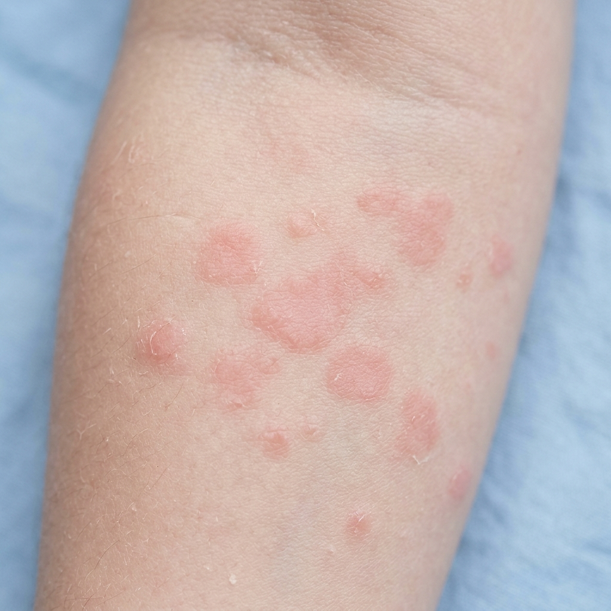

Rashtriya Bal Swasthya Karyakram (RBSK 2.0) · Multi-Modal Child Health Screening Suite
सुरक्षित जाँच: वीडियो कभी सर्वर पर सेव नहीं होता। 33 लैंडमार्क्स ब्राउज़र में ही प्रोसेस होते हैं।
Browser-Side 33 Landmarks
Video streams never touch the server. MediaPipe Tasks Vision runs entirely inside your browser, extracting 33 normalized skeletal coordinates and gaze metrics at 10 FPS over 10–15 seconds (~50 KB JSON payload).
Invariant Torso Normalization
The server subtracts Mid-Hip and scales coordinates by Torso Length, ensuring scale invariance regardless of camera distance or child height.
The 4Ds Clinical Mapping
Calculates Gait Symmetry Index (GSI), Coronal Spine Tilt, Knee-Ankle alignment, FFT tremor frequencies, and orienting latency mapped to non-diagnostic Green / Yellow / Red triage flags.
Real-Time Biomechanical Readings
Live landmark angles and metrics updated continuously at 10 FPS.
Clinical Protocol Instructions
Position camera 2.5–3m away at waist height. Ensure full body (head to ankles) is framed. Child walks naturally across the corridor.
Clinical Screening Flags Noted:
Childhood Skin Health Screening
8-Class clinical classifier (Eczema, Impetigo, Ringworm, Urticaria, Scabies, Chickenpox, Normal skin, Measles).
Probability Distribution
Confidence Share
Child Eye Health Screening
5-Class ocular screening model (Cataract, Conjunctivitis, Eyelid abnormalities, Normal eye, Uveitis) with TTA.
Probability Distribution
Confidence Share
Pediatric Screening Protocols & Working Guides
Rashtriya Bal Swasthya Karyakram (RBSK 2.0) guidelines: Authentic clinical demonstrations with 1-click benchmarking.
How to Screen Sitting Posture
Infants should sit steadily unsupported. Inability to maintain upright sitting by 9–10 months is an early gross motor delay flag (D4).
Observe the vertical plumbline from pelvis to neck. Lateral lean > 12° suggests scoliosis or axial hypotonia (D1/D3).
Hold smartphone in 9:16 portrait mode at chest height, 1.8m away. Infant seated on a firm floor mat unsupported.
Adult hands holding the back obscures natural core stability and invalidates trunk hypotonia detection.
How to Capture Child Walking
Place camera 2.5–3 meters away at waist/chest level so the child from head to ankles stays visible.
Analyzes ankle peak-to-peak step lengths to screen for unilateral limp, hip dysplasia, or hemiplegia.
Well-lit open hallway without clutter. Child barefoot or in snug socks so ankles remain clearly exposed.
Baggy clothing covering feet or parent walking directly in front of the child blocking landmark tracking.
How to Screen Standing Alignment
Calculates intercondylar (knee) vs intermalleolar (ankle) separation to screen for Genu Varum or Genu Valgum.
Mild bow legs are normal under 2 years; persistence or asymmetry beyond 24 months warrants clinical referral.
Child standing with bent knees (θ < 160°) which distorts coronal alignment calculations.
How to Screen Postural Stability
Measures horizontal standard deviation of mid-hip landmark during 10s standing to detect cerebellar ataxia.
Fast Fourier Transform analyzes wrist velocity oscillations in the 1.5–4.5 Hz frequency band for motor stereotypies.
How to Screen Social Orienting
Examiner calls child name at 3.0s. Measures response latency via head-yaw angular velocity for autism cues.
Measures sustained gaze fixation toward examiner/camera. Also screens for upper-limb flapping stereotypies.
How to Capture Skin Photos

Hold camera perpendicular (90°) to the rash, 15–25 cm away, with lesion filling the central frame.
Ensure razor-sharp focus on skin texture. Use diffuse daylight; avoid harsh flash glare.
Blurry macro focus, cast shadows, or yellowish incandescent lighting alter erythema color detection.
How to Capture Eye Photos

Have child look straight forward into camera with eye wide open to reveal sclera, cornea, and iris.
Never use direct bright flash in a dark room. Soft side illumination prevents painful corneal reflections.
Motion blur from squinting or white flash washout obscuring cataract / conjunctival redness.